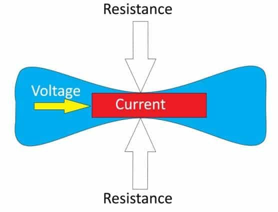
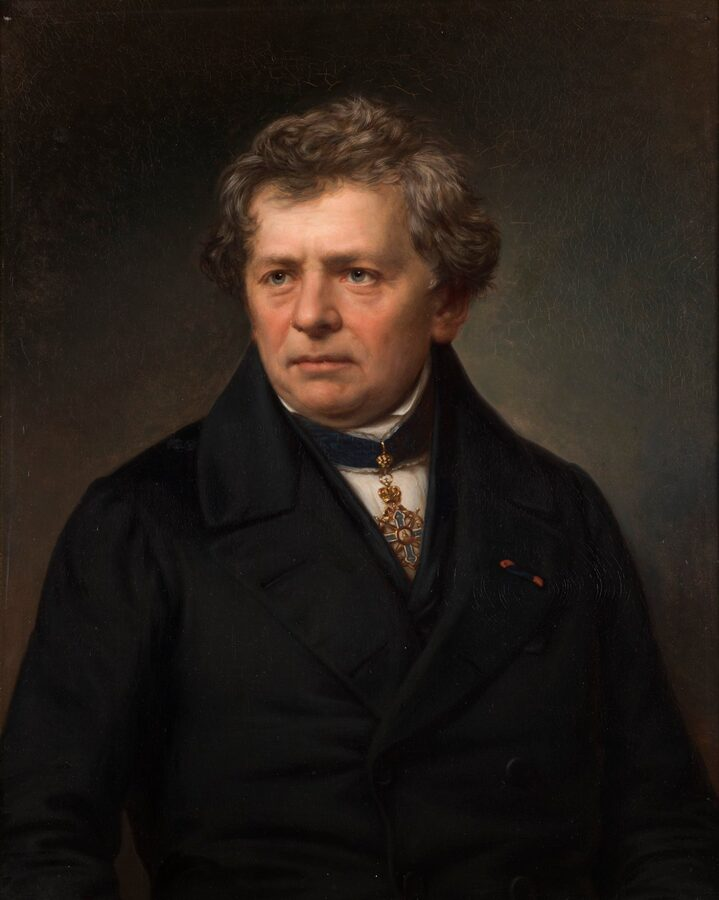

Engineering · Electronics
Ohm's Law
Ohm's Law is the single most important equation in electronics. It describes the relationship between voltage, current, and resistance in a circuit — and once you understand it, you can predict exactly what every component will do before you ever touch a wire.
← Back to EngineeringFirst: What Are Voltage, Current, and Resistance?
Before using the equation, get the three ideas straight. Voltage, current, and resistance are different parts of the same circuit story: the push, the flow, and what slows the flow down.

What Is Ohm's Law?
In 1827, German physicist Georg Simon Ohm published a finding that changed electronics forever: the voltage across a conductor is directly proportional to the current flowing through it, as long as temperature stays constant. That relationship is written as one simple equation.

Worked Examples
The best way to understand Ohm's Law is to use it. In every problem, identify what you know and which form of the equation you need.
Situation: You have a 5V power supply and want to limit current through an LED to 20 mA (0.020 A). The LED drops about 2V across itself. How large a resistor do you need?
The voltage available for the resistor = 5V − 2V = 3V
Use R = V ÷ I
R = 3V ÷ 0.020A = 150 Ω
Answer: Use a 150 Ω resistor (or the next standard value up — 180 Ω — to keep the current safely below 20 mA).
Situation: A 9V battery is connected to a 470 Ω resistor. How much current flows?
Use I = V ÷ R
I = 9V ÷ 470Ω = 0.0191 A ≈ 19.1 mA
Answer: About 19 milliamps flow through the resistor.
Situation: You apply 12V to an unknown component and measure 40 mA (0.040 A) of current with a multimeter. What is its resistance?
Use R = V ÷ I
R = 12V ÷ 0.040A = 300 Ω
Answer: The component has a resistance of 300 Ω.
Situation: A sensor has an internal resistance of 2,200 Ω and needs exactly 5 mA (0.005 A) to operate correctly. What supply voltage does it need?
Use V = I × R
V = 0.005A × 2200Ω = 11V
Answer: The sensor needs an 11V supply to draw its rated 5 mA.
Power: The Fourth Quantity
Ohm's Law deals with V, I, and R — but there is a fourth quantity that goes hand in hand with it: Power (P), measured in Watts (W). Power is the rate at which a component converts electrical energy into heat, light, or motion.
This matters because every component has a power rating. If more power flows through it than it is rated for, the component overheats and can fail — sometimes dramatically. A resistor rated for ¼ W will burn if you run ½ W through it.
Situation: The 150 Ω LED resistor from Example 1 carries 20 mA at 3V. How much power does it dissipate? Is a standard ¼W resistor safe?
Use P = V × I
P = 3V × 0.020A = 0.06 W
Answer: 0.06 W — well under the ¼W (0.25W) rating. A standard resistor is fine. As a rule, keep components at or below 50% of their rated power for long-term reliability.
Ohm's Law in Series and Parallel Circuits
Real circuits have more than one component. The way components are connected — in series (one after another) or in parallel (side by side) — changes how resistance, voltage, and current behave.
Series Circuits
In a series circuit, components share the same current. The total resistance is the sum of all individual resistances. Voltage is shared — each component gets a portion of the total.
Total resistance: R_total = 100 + 220 + 330 = 650 Ω
Current (same everywhere): I = 12V ÷ 650Ω = 18.5 mA
Voltage across 100 Ω: V = 0.0185A × 100Ω = 1.85V
Voltage across 220 Ω: V = 0.0185A × 220Ω = 4.07V
Voltage across 330 Ω: V = 0.0185A × 330Ω = 6.11V
Check: 1.85 + 4.07 + 6.11 ≈ 12V ✓ — the voltages always add up to the supply.
Parallel Circuits
In a parallel circuit, components share the same voltage. Each branch carries its own current. Total resistance goes down as you add more parallel branches — more paths for current to flow.
Total resistance: 1/R_total = 1/300 + 1/600 = 3/600 → R_total = 200 Ω
Total current from supply: I = 6V ÷ 200Ω = 30 mA
Current through 300 Ω branch: I = 6V ÷ 300Ω = 20 mA
Current through 600 Ω branch: I = 6V ÷ 600Ω = 10 mA
Check: 20 mA + 10 mA = 30 mA ✓ — branch currents always add up to the total.
| Property | Series | Parallel |
|---|---|---|
| Current | Same through all components | Splits between branches |
| Voltage | Splits across components | Same across all branches |
| Total Resistance | Adds up (always increases) | Always less than smallest resistor |
| One branch opens | Entire circuit breaks | Other branches keep working |
| Common use | Voltage dividers, LED current limiting | House wiring, battery banks, power rails |
Ohm's Law in the Real World
Every electronic device you own uses Ohm's Law — often thousands of times in a single circuit. Here are some places you will see it in action.
Common Mistakes
Quick Reference
Keep this table handy when working through circuit problems.
| Find | Formula | You Need | Units |
|---|---|---|---|
| Voltage (V) | V = I × R |
Current and Resistance | Volts (V) |
| Current (I) | I = V ÷ R |
Voltage and Resistance | Amperes (A) |
| Resistance (R) | R = V ÷ I |
Voltage and Current | Ohms (Ω) |
| Power (P) | P = V × I |
Voltage and Current | Watts (W) |
| Power (P) | P = I² × R |
Current and Resistance | Watts (W) |
| Series R_total | R = R1 + R2 + … |
Each resistor value | Ohms (Ω) |
| Parallel R_total | 1/R = 1/R1 + 1/R2 + … |
Each resistor value | Ohms (Ω) |
Quick Check
1. A resistor has a resistance of 40 Ω and 0.5 A of current flows through it. What is the voltage across it?
2. A 9V battery is connected to a 1,000 Ω (1 kΩ) resistor. How much current flows?
3. A component has 12V across it and draws 60 mA. What is its resistance?
4. Two resistors are connected in parallel across a 12V supply. What voltage appears across each resistor?
5. A 50 Ω resistor has 5V across it and carries 100 mA. How much power does it dissipate, and is a ¼W resistor safe?
6. You want to run an LED from a 5V supply at 15 mA. The LED has a forward voltage drop of 2V. What resistor do you need?